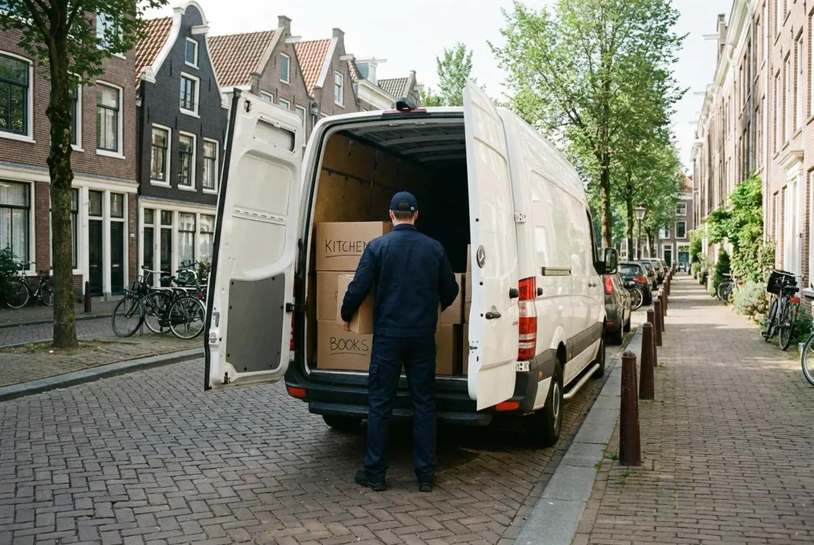

Huren
Je huurwoning opzeggen en opleveren
Een nieuwe woning gevonden is het leuke deel. Daarna moet de oude huurwoning netjes worden afgesloten: opzeggen op tijd, een voorinspectie, en een oplevering waarbij de verhuurder kijkt of alles klopt. Wie de regels kent, betaalt geen onnodige dubbele huur en krijgt de borg zonder discussie terug.

Hoe lang is je opzegtermijn?
Als huurder van een woning is je opzegtermijn gelijk aan de periode tussen twee huurbetalingen, met een minimum van een maand en een maximum van drie maanden. Betaal je per maand, wat bijna altijd zo is, dan is de termijn dus een maand. Een langere termijn in je contract dan de wet toestaat, geldt niet. Je hoeft geen reden op te geven.
Heb je een tijdelijk contract van twee jaar of korter, dan mag je ook voor de einddatum opzeggen. Bij een contract voor bepaalde tijd van langer dan twee jaar kan dat niet voor de einddatum.
Plan de opzegging rond je nieuwe sleutel. De huur eindigt in de regel op een betaaldag, meestal de 1e van de maand. Veel woningcorporaties laten je ook op een andere dag opzeggen; vraag dat na. Lukt het, kies dan een einddatum een paar dagen tot twee weken na je nieuwe sleutel, zodat je tijd hebt om te verhuizen, schoon te maken en kleine reparaties te doen, zonder lang dubbele huur te betalen.
Zo zeg je op
Stuur je opzegging met een aangetekende brief en bewaar het bewijs van verzending. Opzeggen per e-mail of gewone post mag ook, maar is pas geldig als de verhuurder heeft bevestigd dat hij hem heeft ontvangen. Veel woningcorporaties hebben een formulier op hun site; ook dan is het verstandig een bevestiging te bewaren.
Zet in je brief je naam, het adres, de datum waarop je de huur beëindigt, en een adres of e-mailadres waar de verhuurder je na de verhuizing kan bereiken. Dat laatste vergeten mensen vaak, en dan komt de afrekening op het oude adres.
De voorinspectie
De meeste verhuurders, en zeker woningcorporaties, komen een paar weken voor het einde van de huur langs voor een voorinspectie. Ze lopen de woning door en vertellen wat er voor de oplevering moet gebeuren. Vraag om een schriftelijk verslag. Dan weet je precies wat je moet doen, en heb je bij de eindinspectie iets op papier om naar terug te wijzen.
In welke staat lever je op?
Is er bij het begin van de huur een beschrijving van de woning gemaakt, een opnamerapport, dan lever je de woning op in de staat uit die beschrijving. Gewone slijtage door ouderdom en veranderingen waarvoor je toestemming had, tellen niet mee. Is er nooit een beschrijving gemaakt, dan gaat de wet ervan uit dat je de woning in dezelfde staat hebt gekregen als waarin je hem teruggeeft, tenzij de verhuurder het tegendeel bewijst.
Zoek dus het opnamerapport van destijds op, en de foto's die je bij het begin hebt gemaakt. Die zijn bij de eindinspectie goud waard.
Wat je zelf hebt aangebracht
Een laminaatvloer, een nieuwe keuken, een schuurtje in de tuin: wat moet ermee? Daarvoor kijk je eerst of je toestemming had. Veranderingen die je aan het einde zonder noemenswaardige kosten kunt weghalen, mag je zonder toestemming aanbrengen. Voor grotere veranderingen heb je schriftelijke toestemming van de verhuurder nodig.
Had je toestemming, dan hoef je de verandering bij vertrek niet ongedaan te maken. Je mag hem wel zelf weghalen, als de woning daarna weer redelijk overeenkomt met hoe hij oorspronkelijk was. In sommige gevallen kun je ook een vergoeding vragen voor wat blijft zitten. Had je geen toestemming, dan kan de verhuurder eisen dat je het weghaalt.
Vaak kun je spullen ook overdragen aan de volgende huurder, zoals gordijnen of een vloer. Leg dat schriftelijk vast met de verhuurder, want als de nieuwe huurder afhaakt, ben jij nog verantwoordelijk.
De eindinspectie en de sleutels
Bij de eindinspectie lever je de woning leeg en schoon op, en geef je alle sleutels terug, ook van de berging en de brievenbus. Noteer samen met de verhuurder de meterstanden van gas, water en stroom en maak er een foto van. Teken het opleverrapport pas als het klopt; ben je het ergens niet mee eens, schrijf dat er dan bij.
De borg terugkrijgen
Voor huurcontracten die sinds 1 juli 2023 zijn afgesloten, mag de borg niet hoger zijn dan twee maanden kale huur. Laat je de woning achter volgens de afspraken en zonder schade, dan betaalt de verhuurder de borg binnen 14 dagen terug. Is er schade of staat er nog huur, servicekosten of een energieprestatievergoeding open, dan mag de verhuurder die kosten aftrekken en het restant binnen 30 dagen terugbetalen. De verhuurder hoeft geen rente over de borg te betalen.
Wie de oude woning leeg moet krijgen en tegelijk de nieuwe moet inrichten, heeft aan een strakke planning het meest. Bij Kade Verhuizingen vraag je je verhuizing aan met een video of foto's en zie je vooraf de prijs; dan weet je ook welke dag de oude woning echt leeg is.
Bronnen
- Rijksoverheid, Huur opzeggen woning (aangetekende brief, e-mail pas geldig na bevestiging, geen reden nodig, tijdelijke contracten), geraadpleegd 15-11-2026
- Burgerlijk Wetboek Boek 7, art. 7:271 lid 3, lid 6 onder a en lid 8 (opzegging tegen een betaaldag, opzegtermijn huurder gelijk aan betalingstermijn, minimaal 1 en maximaal 3 maanden), art. 7:224 (oplevering met en zonder beschrijving), art. 7:215 en 7:216 (veranderingen en toevoegingen, toestemming, ongedaan maken, vergoeding), geraadpleegd 15-11-2026
- Rijksoverheid, Mag mijn verhuurder een waarborgsom vragen? (maximaal 2 maanden kale huur bij contracten vanaf 1 juli 2023, terugbetalen binnen 14 dagen, of binnen 30 dagen na aftrek van schade of achterstand, geen rente), geraadpleegd 15-11-2026